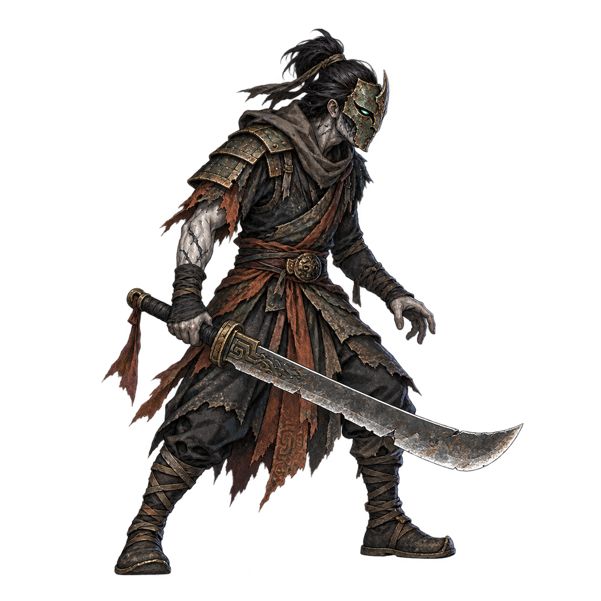

<!doctype html>
<html lang="zh-CN">
<meta charset="utf-8">
<meta name="viewport" content="width=device-width,initial-scale=1">
<title>雾蚀刀卒 · 设计样板</title>
<style>
*{box-sizing:border-box}body{margin:0;padding:28px;background:#101a20;color:#eadbbd;font:16px/1.65 system-ui,sans-serif}main{max-width:1280px;margin:auto}h1{font-size:26px;margin:0}p{color:#abb9b9;margin:8px 0 20px}.stage{position:relative;width:1280px;height:720px;background:url('../../../native/godot/assets/environment/mistward-backdrop.png') center/cover;transform-origin:top left}.viewport{overflow:auto;border:1px solid #435153;border-radius:12px}.enemy{position:absolute;bottom:140px;width:var(--size);height:var(--size)}.enemy img{width:100%;height:100%;object-fit:contain;display:block}.enemy span{position:absolute;top:100%;left:0;right:0;text-align:center;white-space:nowrap;background:#101a20c9;border-radius:6px}.stage:before{content:'静态设计预览 · 原图尚未接入游戏';position:absolute;left:28px;top:22px;background:#101a20c9;padding:8px 14px;border-radius:6px}.master{margin-top:28px;display:flex;gap:24px;align-items:center}.master img{width:360px;max-width:50%;background:#26353b;border-radius:12px}a{color:#ddbd82}
</style>
<main>
<h1>雾蚀刀卒 · 第一版</h1>
<p>破铜面、旧甲与残布、雾蚀手臂。对照实际横屏场景的身体高度；背景取自项目原素材。</p>
<div class="viewport"><div class="stage">
<div class="enemy" style="--size:134px;left:260px"><span>身体约120px</span></div>
<div class="enemy" style="--size:156px;left:600px"><span>身体约140px · 建议</span></div>
<div class="enemy" style="--size:179px;left:940px"><span>身体约160px</span></div>
</div></div>
<div class="master"><div><h2>身份原画</h2><p>设计候选，尚无动作素材与引擎视觉验收。</p><a href="PROMPT.md">完整提示词与来源</a></div></div>
</main>
</html>
